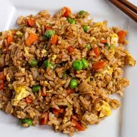
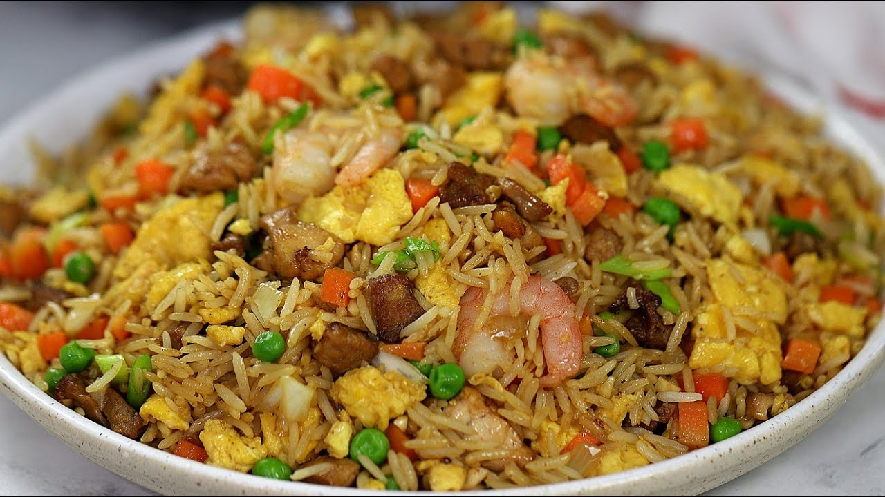
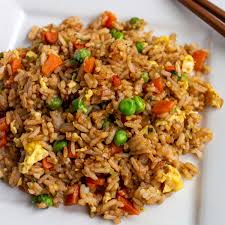
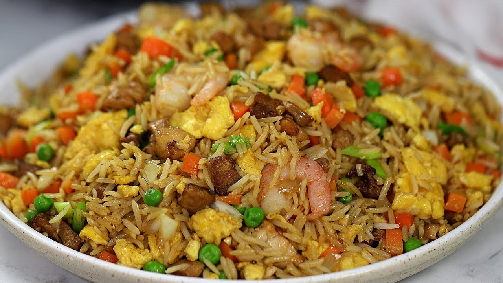
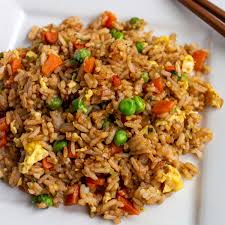
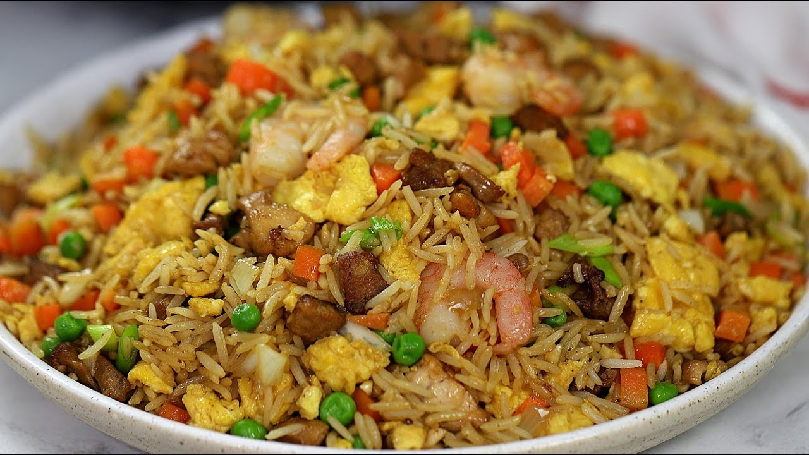

While the exact origins of fried rice are lost to history, it’s believed that it was invented sometime during the Sui dynasty (A.D. 589–618), in the city of Yangzhou in eastern Jiangsu province. Yangchow (Yangzhou) fried rice is still the standard by which all other Chinese fried rice dishes are judged: morsels of fluffy rice tossed with roast pork, prawns, scallions, and peas. In American-Chinese restaurants, you’ll sometimes find it called "special fried rice."
| Ingredients | measurements |
|---|---|
| Carrot | 5 fresh ones |
| Green pepper | 3 fresh ones |
| Ball pepper | 5 fresh ones |
| Rice | 5 cups |
| Vegetable oil | 2 spoons |

